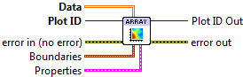
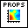

View Array¶
Display a 2D array using pseudocolor.
This VI provides a simple way to visualize a 2D array, by coloring the values according to a colormap. Interpolation is used to render the array in a smoothed fashion.

 Plot ID/Plot ID Out
Plot ID/Plot ID Out- Plot identifier. Plot ID Out always contains the same value as Plot ID.
 Data
Data- 2D array to visualize.
 Boundaries
BoundariesArray edge locations, in data units.
 X Min
X Min- Left side of array. Default is 0.
- X Max
- Right side of array. Default is NX-1, or 1.0 if NX==1.
- Y Min
- Bottom of array. Default is 0.
- Y Max
- Top of array. Default is NY-1, or 1.0 if NY==1.
-  Properties
Property cluster, available under the “Properties” subpalette.
- Colormap
Controls the colormap used to shade the array data.
 Map
Map- Colormap to use. See Colormaps for more info.
- Value Min
- Lower range for colormapped data; values smaller than this will all be plotted with the first color in the colormap.
- Value Max
- Upper range for colormapped data; values larger than this will all be plotted with the last color in the colormap.
- Scaling
- Colormap scaling mode. Currently only linear scaling is supported.
 Reverse
Reverse- Flip the colormap; for example, if a map has 0.0 as black and 1.0 as white, this will assign 0.0 as white and 1.0 as black.
- Display
Controls general appearance of the plot.
- Alpha
- Alpha blending value for this object (0.0 to 1.0). Default is 1.0 (fully opaque).
- Z Order
- Stacking order. Default is chosen based on the object type.

 Error In/Out
Error In/Out- Terminals for standard error functionality.
Example¶
Download ArrayView.vi,
or see Examples for a complete list of examples.
Axis Types¶
This VI supports rectangular axes. Use with polar axes will result in 402905 - Operation Not Supported for Polar Plot. Likewise, only linear scales are supported. Use with log or symlog axes will result in 402906 - Operation Not Supported for Axis Scale.
Errors¶
Other information¶
If an empty Data array is provided this VI does nothing.
A non-finite entry in Boundaries will be ignored, and the default used. If any of the max/min entries in Boundaries are reversed, the array will be displayed flipped along that axis.
A non-finite value in Z Data will appear as a “hole” or artifact in the plot.